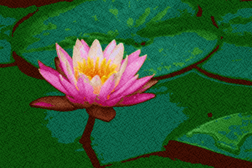

The aim of my BTP project at IIT Delhi was to create artistic representation of videos. What you see in the left is one of the final results of this project and in my opinion closest I could get in realising this aim. This result was produced by collective application of several pre-existing techniques of NPR and few tweaks of my own. I would explain each of them in detail as we proceed.
One of the more obvious steps in video NPR(Non Photo realistic Rendering) is to extract frames from it and apply artistic rendering on each of frames separately. In fact image NPR can be considered sub problem of video NPR(why?). So I dedicated a considerable amount of time learning pre-existing techniques and thinking about new ones to do this job. One of simplest methods of image NPR is to apply a collection of filters on an image. For example Quantization , Halftoning .
When I researched I found that today NPR is such a big field that a separate international conference is held for it. One of the biggest breakthroughs of image NPR were published by Paul Haeberli in his paper Paint By Numbers: Abstract Image Representations. In this paper the main concept was to represent a painting as an ordered collection of brush strokes.